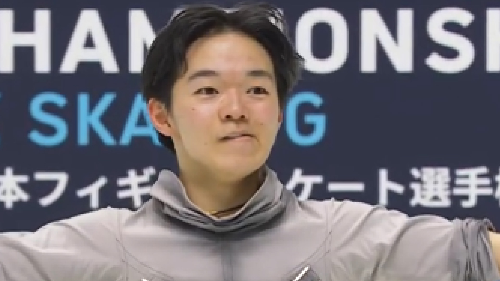

鍵山優真

画像参照: https://www.fgsk8.com
生年月日
2003年5月5日 (20歳)
出身
神奈川県
所属クラブ
オリエンタルバイオ
経歴
星槎国際高-中京大学
元フィギアスケート選手で、オリンピックにも出場した父・正和さんの影響で5歳から本格的にスケートを始める。初めて鍵山が国際大会に派遣されたのは、2018年8月のアジアフィギア杯。この大会で、総合得点174.90記録し国際大会初優勝。2019年には、全日本ジュニアで優勝、全日本選手権で3位と初の表彰台にあがった。2021年はグランプリシリーズに初参戦、イタリア・フランス大会で優勝。全日本選手権でも3位に入り、北京五輪 への出場を決めた。北京五輪では、個人ショートで自己ベストをたたきだし、総合2位に入り日本フィギア最年少で銀メダルを獲得した。団体でも4回転ループをオーバーターンながらも成功させ、日本団体銅メダルに貢献。2023年は、初のグランプリファイナルで3位、NHK杯では宇野昌磨を抑え優勝。次のミラノ五輪出場が期待される。
2023~24
ロンバルディア杯: 優勝
グランプリシリーズ、フランス大会: 3位
NHK杯: 優勝
グランプリファイナル: 3位
全日本選手権: 2位
2022~23
全日本選手権: 8位
2021~22
グランプリシリーズ、フランス大会: 優勝
グランプリシリーズ、イタリア大会: 優勝
北京五輪: 2位
全日本選手権: 3位
2020~21
NHK杯: 優勝
世界選手権: 2位
全日本選手権: 3位